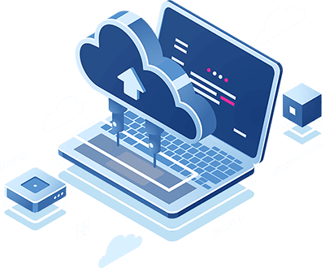

| Tipos de serviço | Informações |
|---|---|
Suporte Técnico e Manutenção |
- Assistência técnica e suporte remoto - Manutenção preventiva e corretiva de computadores - Limpeza de hardware e remoção de vírus/malware - Atualização de software e drivers |
|  Serviços de Backup e Recuperação de Dados |
- Recuperação de dados apagados ou corrompidos - Implementação de políticas de segurança de dados |
Desenvolvimento de Softwares e Aplicativos |
- Criação de softwares personalizados para empresas - Desenvolvimento de aplicativos móveis - Automação de processos internos - Integração de sistemas e APIs |
Consultoria em TI |
- Análise e diagnóstico de infraestrutura de TI - Planejamento estratégico de tecnologia - Consultoria para otimização de recursos tecnológicos - Treinamentos e capacitações em TI |
Venda de Computadores e Equipamentos |
- Montagem personalizada de desktops e sistemas avançados - Suporte técnico pós-venda para configuração e manutenção - Computadores de alta performance para atividades intensivas - Consultoria para montagem de setups profissionais |